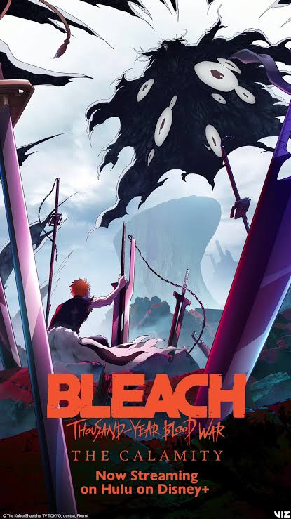
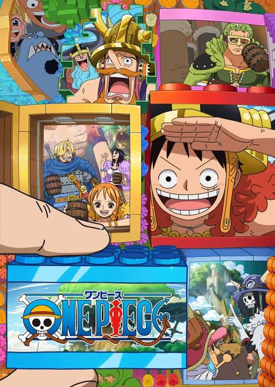
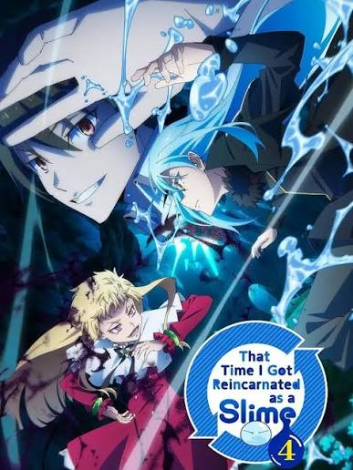
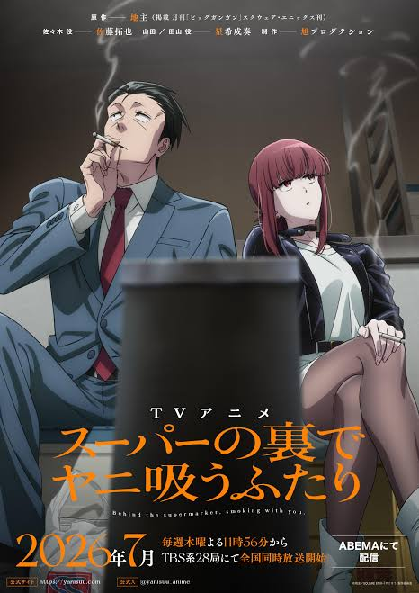

Frieren: Beyond Journey's End Season 2

Genre: Adventure, Drama, Fantasy
Episodes: 10
Studio: MADHOUSE
Rating: 8.8/10
Enjoyed the anime? Check out the manga to continue the story!
Discover and explore the latest reviews about your next favorite anime and manga!
Anime Review Hub is a place for anime and manga fans to discover new series, explore reviews, and find something new to watch or read.
With so many new and returning anime releasing in 2026, we looked at rankings from IMDb, AniList, and MyAnimeList to create a combined list. The rankings were averagedacross the three websites to create the Anime Review Hub Top 10.
Genre: Adventure, Drama, Fantasy
Episodes: 10
Studio: MADHOUSE
Rating: 8.8/10
Enjoyed the anime? Check out the manga to continue the story!

Genre: Action, Adventure, Drama
Episodes: 19
Studio: WHITE FOX
Rating: 9.0/10
Enjoyed the anime? Check out the manga to continue the story!

Genre: Adventure, Drama, Fantasy
Episodes: 13
Studio: BUG FILMS
Rating: 8.5/10
Enjoyed the anime? Check out the manga to continue the story!

Genre: Action, Adventure, Drama, Fantasy
Episodes: 12
Studio: Studio Bind
Rating: 8.0/10
Enjoyed the anime? Check out the manga to continue the story!

Genre: Action, Supernatural, Fantasy
Episodes: 12
Studio: MAPPA
Rating: 8.6/10
Enjoyed the anime? Check out the manga to continue the story!

Genre: Action, Adventure, Mystery,Supernatural
Episodes: 12
Studio: MAPPA
Rating: 8.2/10
Enjoyed the anime? Check out the manga to continue the story!

Genre: Adventure, Drama, Fantasy
Episodes: 14
Studio: Studio Bind
Rating: 8.5/10
Enjoyed the anime? Check out the manga to continue the story!

Genre: Comedy, Romance, Slice of Life
Episodes: 12
Studio: Lapin Track
Rating: 8.3/10
Enjoyed the anime? Check out the manga to continue the story!

Genre: Action, Adventure, Drama, Fantasy, Sports
Format: ONA
Studio: David Production
Rating: 9.5/10
Enjoyed the anime? Check out the manga to continue the story!

Genre: Drama, Slice of Life
Episodes: 13
Studio: Shuka
Rating: 8.7/10
Enjoyed the anime? Check out the manga to continue the story!

Genre: Action, Adventure, Supernatural
Episodes: 10
Studio:PIERROT FILMS
Rating: 9.0/10

Genre: Action, Adventure, Comedy
Episodes: 1178
Studio: Toei Animation
Rating: 9.0/10

Genre: Action, Adventure, Comedy, Fantasy
Studio: 8-bit
Episodes: 24
Rating: 8.3/10

Genre: Comedy, Romance, Slice of Life
Studio: Asahi Production
Episodes: 12
Rating: 8.2/10
Check out the latest anime reviews.
Anime InformationCheck out the latest manga reviews.
Manga Information